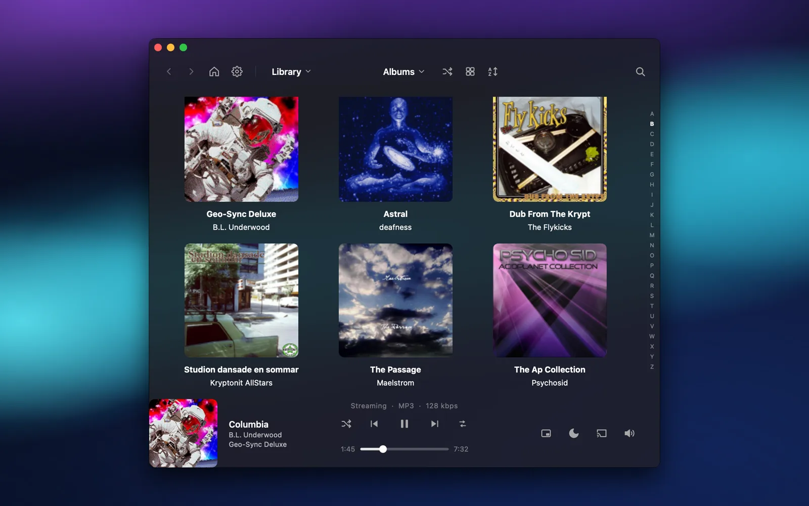
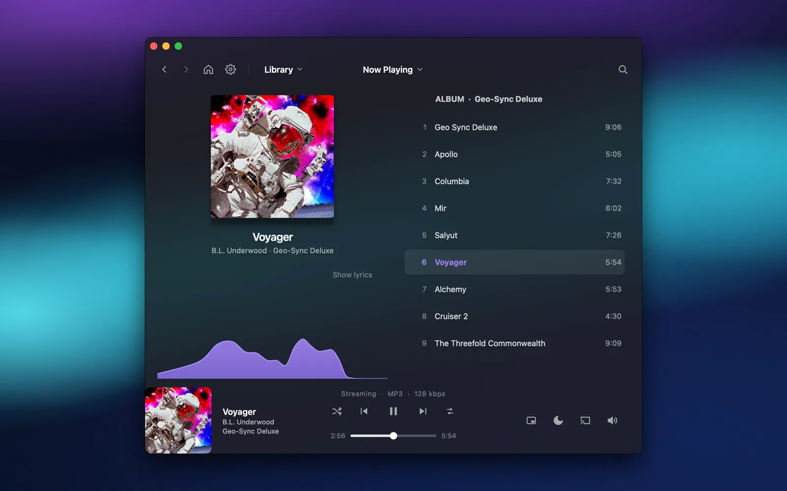
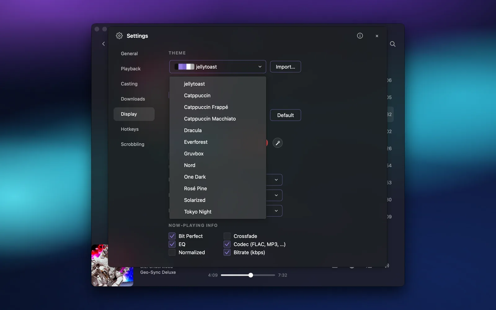
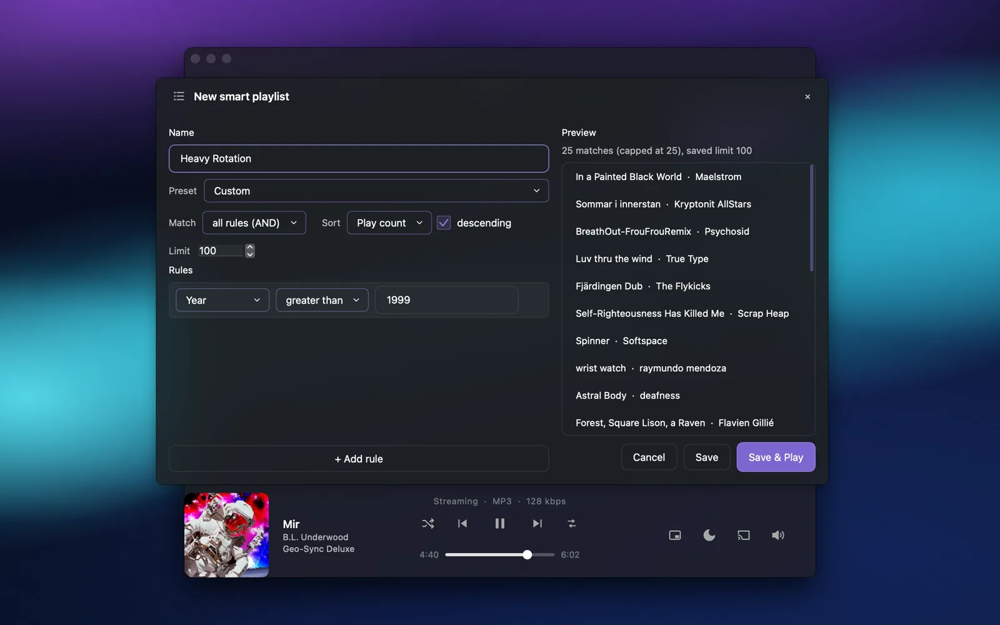
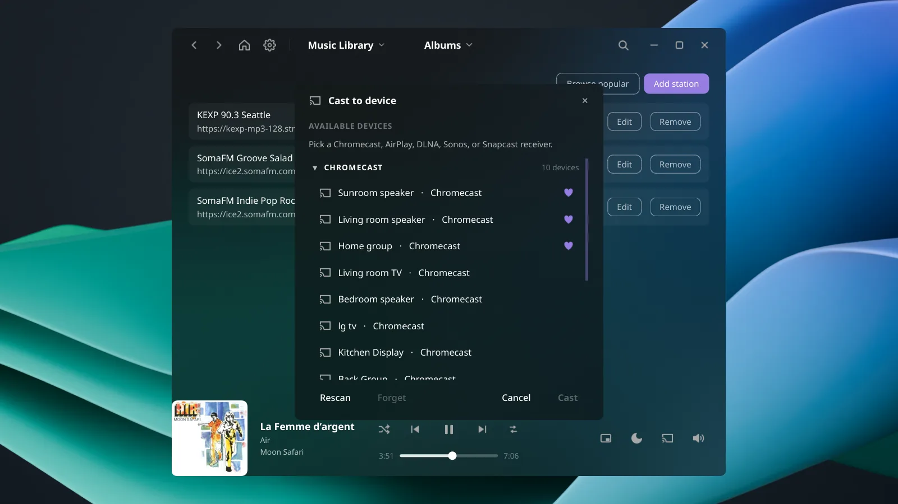
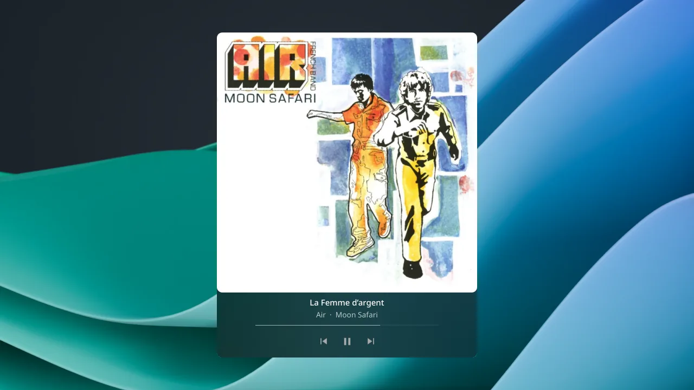

jellytoast
A desktop music player for Jellyfin and
Navidrome servers —
bit-perfect playback, casting, mini-player,
and offline downloads.






Self-hosted music with desktop features
Desktop features
Frosted glass with a full theme picker — light/dark, color presets (Catppuccin, Dracula, Nord…), base16 import, and system-accent follow — on KDE, macOS, and Windows. Plus a floating mini player, visualizer, media keys, and notifications.
Bit-perfect playback
FLAC / ALAC / OPUS / DSD playback via mpv.
Cast anywhere
Send music to Chromecast, AirPlay 2, Sonos, or DLNA. Local relay for offline or Tailscale casting.
Offline mode
Cache albums, playlists, or your whole library for offline playback.
Install
Any OS — PyPI & source need libmpv
pipx install jellytoast
git clone https://github.com/wolfgangwarehaus/jellytoast
cd jellytoast && pip install -e .
If you are enjoying the app and want to support, you can
☕ Tip on Ko-fi